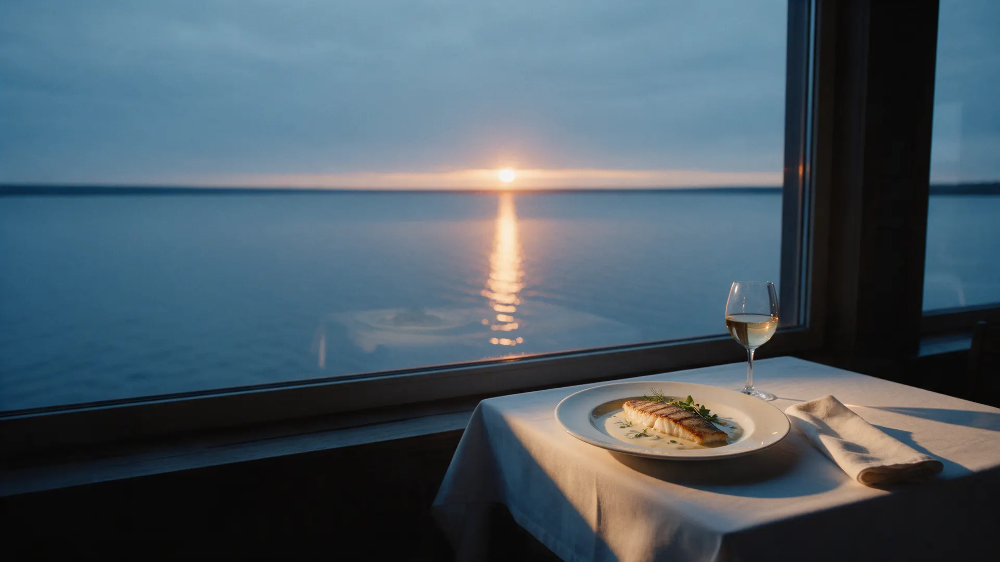
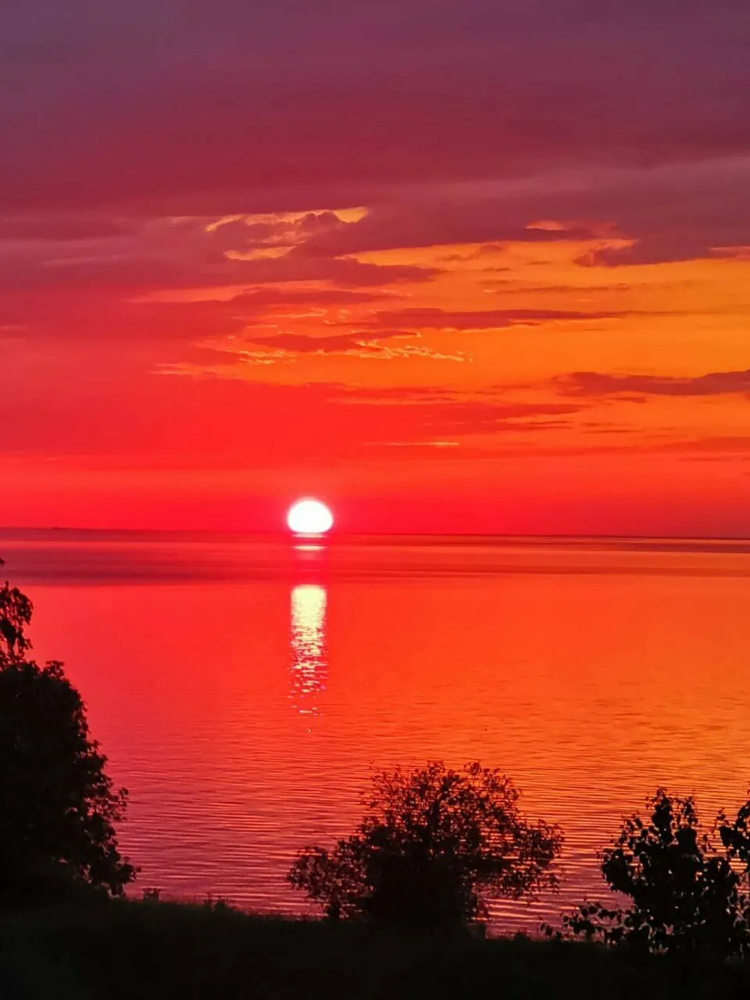
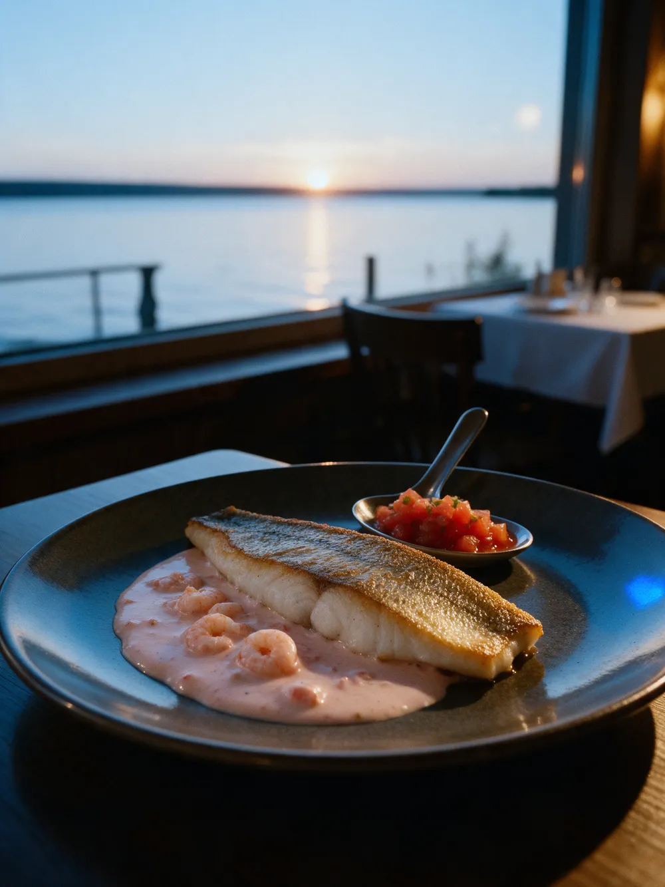
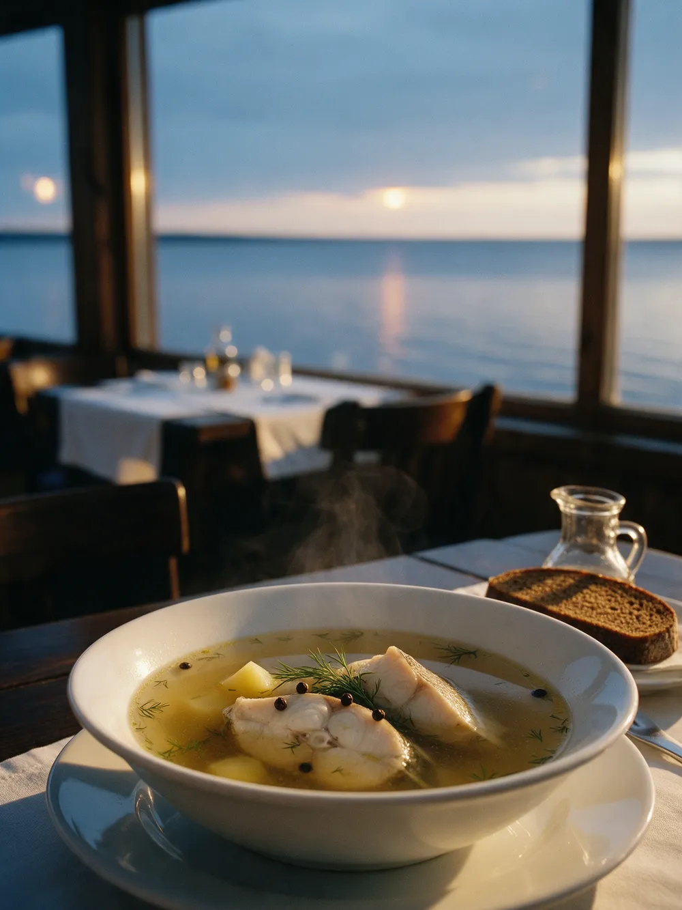
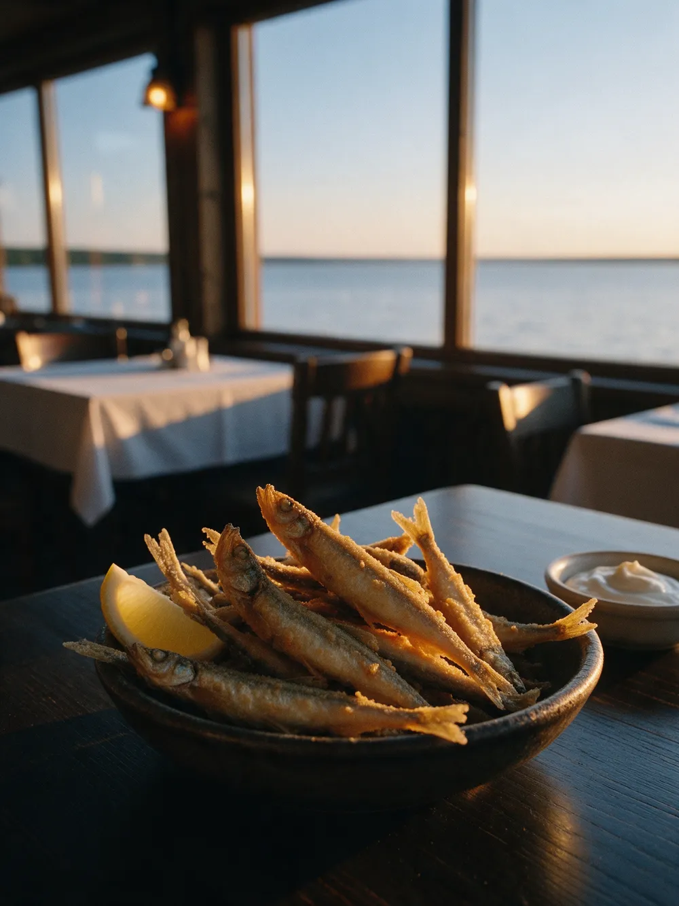
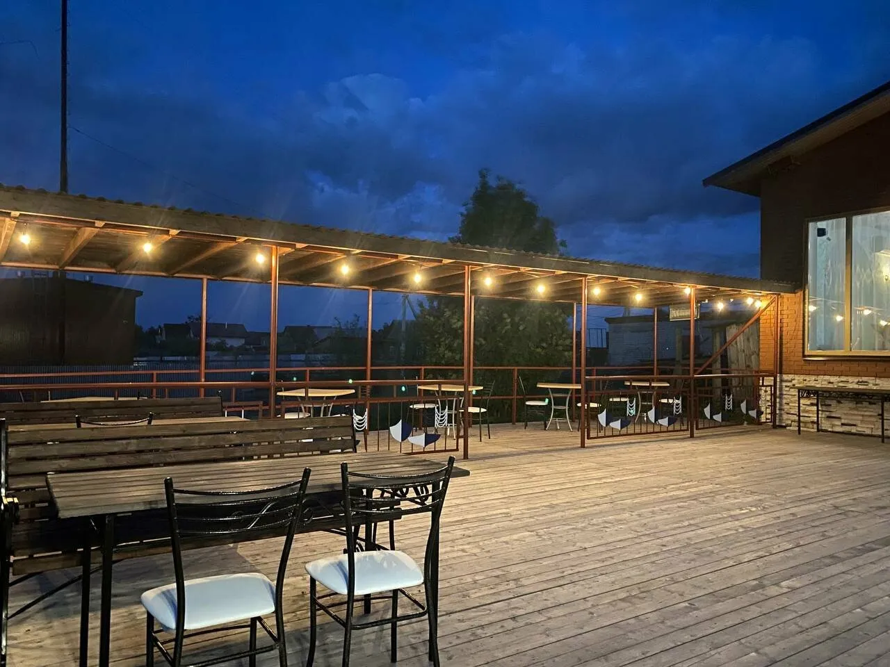
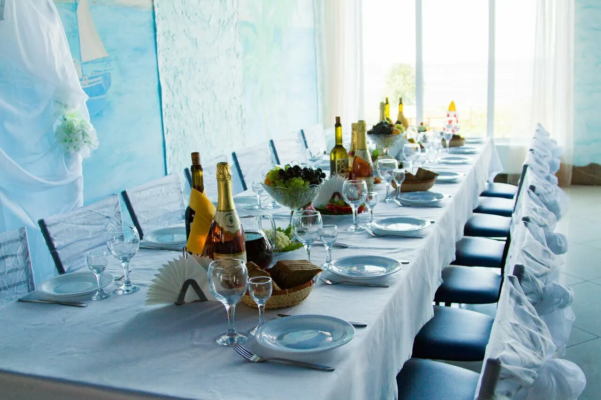
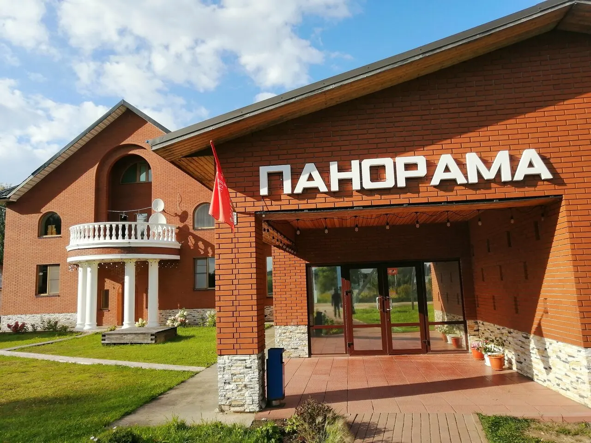

Ресторан на берегу Белого озера
Белозерский судак, уха и снеток. Панорамные окна, веранда у воды и закат прямо за стеклом.
каждый день с 12:00

Сегодня в Белозерске
Закат сегодня–:–
Солнце садится прямо в озеро. Столик у окна лучше бронировать заранее, к закату.
Каждый день с 12:00
- Пн12–22
- Вт12–22
- Ср12–22
- Чт12–22
- Пт12–24
- Сб12–24
- Вс12–22
«Можно загуглить время заката и прийти именно на него.»
Совет из отзыва Надежды, 9 мая 2026. Мы посчитали за вас.
За чем сюда едут: местная рыба
Белозерский судак
С креветочным соусом и томатной сальсой. Или fish & chips: филе судака в панировке с картофельными чипсами.
«Невероятно свежая, нежная и сочная рыба!»
Ксения, 20 августа 2026
Уха из судака
Прозрачная, с крупными кусками рыбы. Гости отдельно пишут: ни одной косточки.
«И только здесь знают, что такое Настоящая Уха!..»
Cornely, 12 июня 2026
Жареный снеток
Маленькая озёрная рыбка, которой славится Белозерье. Жарят до хруста.
«Жареный снеток просто как семечки, невозможно оторваться»
Надежда, 20 апреля 2026



Что пишут гости
«Ресторан "Панорама" - это то, чем запоминается Белозерск, наряду с Кремлём, музеями и Белым озером.»
Cornely, 12 июня 2026
«Ответственно заявляю - здесь самая вкусная кухня в Белозерске. Я готова приехать к вам, чтобы только ещё раз отведать вашего судака!»
Ксения, 20 августа 2026
«Восторг вызвал салат из хрустящих баклажанов с клубникой🔥- теперь все последующие пробы этого блюда будут сравниваться с Белозерским.»
марина, 6 июля 2026
«Единственный ресторан в Белозерске уровня 'ресторан') По блюдам, подаче и обслуживанию.»
Екатерина, 26 июля 2026
«Кушали с детьми, меню очень разнообразное, красивая сервировка. Вид на озеро хочется отметить, кушаешь и наслаждаешься)»
Анастасия, 20 июня 2026


Свадьба, банкет или вечер с танцами
Банкетный зал с окнами на озеро, танцпол и летняя веранда у воды. Проводим свадьбы, банкеты и корпоративы, устраиваем дискотеки.
- Залдо {{N}} гостей
- Своё виноможно, есть пробковый сбор
- Меню банкетауточнить по телефону
- Рядомгостиница с видом на озеро, если гости останутся на ночь

Как нас найти
Ресторан стоит на восточной окраине Белозерска, у обводного канала, там, где он выходит к Белому озеру. От центра дорога к берегу местами грунтовая: в дождь удобнее на машине или такси.
- Адреснаб. П.К. Георгиевского, 5А
- Часыпн–чт и вс 12:00–22:00, пт и сб 12:00–00:00
- Телефон+7 953 109-19-99
- Оплатакарта, СБП, наличные
- Средний чек1000–1500 ₽
Закаты у «Панорамы»
Так солнце садится над Белым озером и каналом у ресторана. Фото гостей с Яндекс Карт.
Займите столик у окна к закату
Позвоните, и мы оставим для вас стол у панорамного окна. Летом на веранде – у самой воды.
каждый день с 12:00